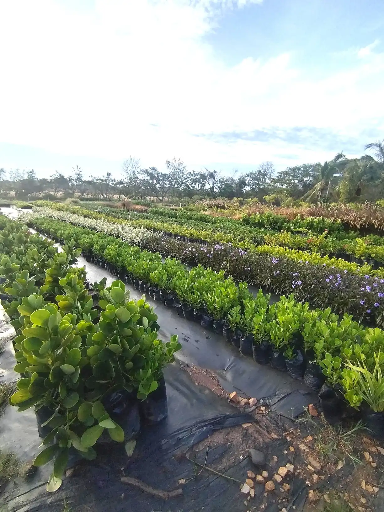

Inventario verificado de finca • Río Grande, Coclé
Catálogo botánico vivo: palmas, árboles, plantas y gramas
Especies ornamentales, palmas reales y árboles forestales cultivados bajo estándares agronómicos en nuestras fincas de Coclé. Filtra por categoría y resistencia climática.
Inventario verificado de finca
Inventario activo de finca y vivero central
Especies ornamentales y forestales producidas en nuestro vivero de Río Grande, Coclé. Filtrables por familia botánica y resistencia climática.
Cargando catálogo botánico de Jardines Urbanos...
Asesoría paisajística
¿Tienes un proyecto o una lista botánica de arquitectura?
Envíanos tu listado de especies o plano de paisajismo. Cotizamos suministro directo desde vivero con entrega programada en obra.
Enviar listado de especies por WhatsApp